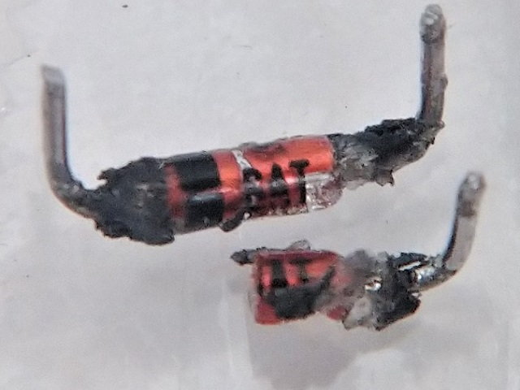

VEMURAM Karen 解析
2024年01月14日 カテゴリー：修理・改造・解析
VEMURAMのエフェクターは、基板の一部がモールドされていることが知られています。今回は比較的部品数が少ないKarenが手に入ったので、解析に挑戦してみることにしました。
基板は4層で、トップ面と底面は一面ベタグラウンドになっています。おそらく配線を隠すためでしょう。トップ面と底面の銅箔を削り取るのはなかなか大変な作業でした。KiCadデータ（基板画像入り）、LTspiceの回路図データはGitHubにあります。
＜モールドとの闘い＞
ICやFETらしきもの、クリッピングダイオード周辺回路が黒いモールドに覆われています。このモールドは、燃料用アルコールに漬けると少し柔らかくなりました。
ICは燃料用アルコールに漬けた後に爪で削るとうっすらと文字が見え、RC4558Pだとわかりました。
FETらしきものも同様に表面を慎重に削りましたが、型番は出てきませんでした。パーツアナライザで調べると、NPNトランジスタだとわかりました。このトランジスタはグラウンドだけに繋がっていて（下写真）、特に意味はないようです。公式ページでも「Transistors: N/A」という記載となっています。
モールドは熱で溶け、ニオイはキツくなかったので、半田ごてを使って削り取っていきました。しかしこれは失敗で、抵抗の表面が削れたりダイオードが破損したりしてしまいました。
抵抗はジャンパーで、破損がなかったダイオードはBAT85Sという印字が見えました。破損したダイオードは「AT」の文字が見えたので、破損がなかったダイオードと同じ型番と判断しました。回路図の記号を変更し忘れていますが、ショットキーダイオードです。

▽回路図
オペアンプの非反転増幅で構成されています。C6は「Tri-sound」表記のコンデンサ（下写真）で、特注品のようです。回路図には実測した容量を記載しました。
Gain widthトリマーは、Gainポットに並列に抵抗を入れて調整幅を変えるという仕組みです。この場合、Cカーブのように最小値側でゲインがすぐに上がる状態になるため、あまり調整しやすくないように思います。
▽シミュレーション
- 回路全体 （Gain width 100% Tone 50% Gain 0%→50%→100%）
TUBE SCREAMER（DRIVE 100% TONE 50%）、ProCo RAT（DISTORTION 100% FILTER 50%）を参考として掲載しました。Karenは少し低音域側に寄った特性となっています。
- Tone 0%→50%→100%

BJF設計のペダル（→ANODIZED BROWN DISTORTION 4K）等で見られるトーンコントロール回路の形ですが、C12があることにより高音域が盛り上がった特性になっています。
---2024年1月30日追記---
PedalPCBのフォーラムで、別の個体のクリッピングダイオードもBAT85Sであることが確認されました。ただ、ダイオードの片方が最初から壊れていたとのことでした。実は私が解析した個体も、分解前からD1が壊れていました。これは偶然の一致なのでしょうか…。
そこでさらに別の個体を入手しました。ロット番号からすると初期に近い個体のようです。
この個体はダイオードは壊れていませんでしたが、R5が22kΩでした。考えられるのは、あるロット以降では片方のダイオードが意図的に破壊され、歪みにくくなったためにR5が150kΩに変更されたという可能性です。意味のないトランジスタを実装するくらいなので、このようなことが行われるのもあり得るように思います。